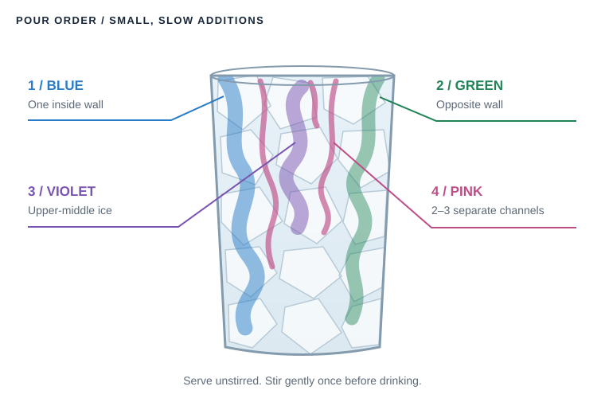

Aurora Over Alaska
Northern forest and tart berry, with a little light in the ice. Boreal botanicals, birch, lingonberry, and lemon meet glacier blue, emerald, violet, and pink ribbons.
This is an Alaska-inspired creation, rather than a traditional Alaskan recipe. Start with the mocktail; add juniper-forward gin for the cocktail variation.
Gather the forest flavors.
Specialty ingredients below use direct Amazon product links, not affiliate links. Prices and availability can change.
- KWE Boreal & Hops Tonic Syrup
- Escuminac Canadian Yellow Birch Syrup
- Dried Butterfly Pea Flowers, 100 g
- D’Arbo Wild Lingonberry Sauce, 350 mL
- MONÉGASQUE Silver Edible Glitter
- Green Liquid Food Coloring
Pick up locally: fresh lemons, plain soda water, crushed or pebble ice, and gin if making the cocktail.
Useful tools: a fine strainer, small mixing glass, measuring spoons or jigger, and four small cups. A teaspoon, pipette, straw, or squeeze bottle helps place the pink streaks.
Prep three small bases.
Chill everything completely before it meets the ice. These prep batches make more than one drink’s color additions; measure only the portions in the next section.
Butterfly pea concentrate
10–12 dried flowers + 3 oz / 90 mL hot water. Steep 8–10 minutes, strain, and chill completely.
Aim for very dark cobalt blue: the finished drink and melting ice will dilute it.
Lingonberry pour
1 tbsp sauce + 1 tbsp hot water. Mix until smooth, fine-strain, and chill.
The D’Arbo product is a sauce rather than a syrup. Straining keeps berry solids out of the ribbons.
Emerald dilution
1 tiny drop green food coloring + 2 tbsp / 30 mL cold water. Mix well.
This keeps the green translucent and prevents one concentrated drop from coloring the entire drink.
Four cups. Four colors.
Mix these separately in four small cups, ready to pour in order. Butterfly pea is pH-sensitive: lemon shifts its blue pigment toward violet and pink. The exact hue will vary with the tea and acidity.
1 / Glacier blue
¼ oz / 7.5 mL chilled butterfly pea concentrate.
2 / Emerald
¼ oz / 7.5 mL diluted green water.
3 / Violet
¼ oz / 7.5 mL butterfly pea concentrate + 3–5 drops lemon juice.
4 / Aurora pink
1 tsp strained lingonberry pour + 1 tsp lemon juice + 1 tsp butterfly pea concentrate.
The Northern Lights mocktail.
- ½ oz / 15 mL KWE Boreal & Hops tonic syrup
- 1 tsp / 5 mL birch syrup
- ¼ oz / 7.5 mL fresh lemon juice
- 3 oz / 90 mL plain soda water
- Tiny knife-tip pinch silver edible shimmer
- All four aurora colors measured above
- Crushed or pebble ice to fill the glass completely, plus ice for mixing
Build the drink
- Chill a clear Collins or highball glass.
- Fill it completely with crushed or pebble ice.
- In a small mixing glass, combine the KWE syrup, birch syrup, and lemon juice.
- Stir briefly with ice.
- Strain over the fresh crushed ice.
- Slowly add 3 oz / 90 mL soda water.
- Add a very small pinch of edible silver shimmer.
- Rotate the glass once so the shimmer creates subtle moving currents.
- Add the four colors using the presentation sequence below.
- Do not stir before serving.
- Give the drink one gentle stir before actually drinking it.
Pour ribbons through the ice.
The goal is irregular vertical ribbons and clouds, rather than horizontal layered stripes. Packed ice slows the mixing while small, gentle pours find separate channels.

- Blue first: slowly pour the glacier-blue concentrate down one inside wall.
- Green opposite: pour the emerald dilution down the opposite side.
- Violet: drizzle through several pieces of ice in the upper middle.
- Pink last: use a teaspoon, pipette, straw, or squeeze bottle to create 2–3 thin streaks in separate ice channels.
- Stop mixing. Serve immediately, then stir gently once before drinking.
Make the light visible
- Clear ice works better than cloudy ice.
- Fill the glass completely with crushed ice to slow color mixing.
- Serve immediately; the colors gradually merge toward blue-purple.
- Dark backgrounds or side lighting make the colors and shimmer much stronger.
- Garnish minimally with a lemon twist, frozen blueberry, or small rosemary sprig.
- Use only food-grade edible shimmer. Less shimmer is better.
Add a juniper backbone.
Gin contributes juniper and dryness. Keeping the KWE portion at ¼ oz avoids overpowering the drink with hops and quinine.
- 1½ oz / 45 mL juniper-forward gin
- ¼ oz / 7.5 mL KWE Boreal & Hops tonic syrup
- 1 tsp / 5 mL birch syrup
- ¼ oz / 7.5 mL fresh lemon juice
- 1½ oz / 45 mL plain soda water
- Same tiny pinch silver edible shimmer
- Same four color ribbons and fresh crushed or pebble ice
Build the cocktail
- Stir the gin, KWE syrup, birch syrup, and lemon juice with ice for about 10 seconds.
- Strain into a clear highball packed with fresh crushed or pebble ice.
- Top with 1½ oz / 45 mL soda water.
- Add the tiny pinch of shimmer.
- Add blue, green, violet, and pink in the same order as the mocktail.
- Serve unstirred for presentation.
- Stir gently once before drinking.
Forest first. Color second.
Keep the colored additions small so this tastes like a proper botanical drink rather than colored syrup.
- KWE Boreal & Hops
- Northern forest botanicals, hops, lime, and tonic bitterness.
- Birch syrup
- Concentrated tree-sap sweetness, caramel, and woody depth.
- Lingonberry
- Tart northern berry character.
- Lemon
- Acidity and the butterfly-pea color change.
- Butterfly pea
- The visual color system, with mild tea flavor.
- Gin
- Juniper and botanical structure in the cocktail version.
- Silver shimmer
- Visual only; just enough to catch the light.